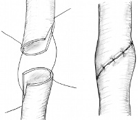

You are here: Urology Textbook > Surgery (procedures) > Ureteroureterostomy
Ureteroureterostomy: End-to-End Anastomosis of the Ureter
Indication for Ureteroureterostomy
- Ureter injury (Elliot and McAninch, 2006)
- Treatment of short segment (<3 cm) ureteral stricture of the middle and proximal ureter. Distal ureteral strictures are best treated with reimplantation of the ureter.
- Treatment of retrocaval ureter
Contraindications
- Long ureteral stricture or injuries, which do not allow a tension-free end-to-end anastomosis.
- Kidneys without sufficent function (<15% of total glomerular filtration rate)
- Underlying diseases with excessive surgical risk, if a ureteral stent is an alternative.
Surgical Technique of Ureteroureterostomy
Preoperative Patient Preparation
- Exclusion or treatment of a urinary tract infection
- Insertion of a DJ ureter stent and insuring the diagnosis with retrograde pyelography, if possible.
- Perioperative antibiotic prophylaxis
- Insertion of a transurethral catheter
Surgical Approach:
Surgical Approach
The surgical approach to the proximal ureter is via a flank incision. The mid-ureter and distal ureter is reached with retroperitoneal or transperitoneal lower abdomen incisions: e.g. paramedian laparotomy or Gibson incision. After identification of the ureter with stricture or injury, the ureter is carefully exposed. Atraumatic treatment and protection of the vascular supply is important.
Anastomosis of the Ureter:
- After identification of the stricture or injury, the diseased part of the ureter ist removed. Both ends of the ureter must be free of scarred tissue, with good vascular supply and should be brought together without tension.
- The proximal and distal end are spatulated about 7–10 mm at 180 degrees apart.
- Placement of a ureteral stent, if you have not done preoperatively.
- Corner sutures (e.g. PDS 5-0) are placed. Afterwards, the ureter anastomosis is completed by using the corner sutures (running suture) or in a interrupted fashion [fig. ureteroureterostomy].
- Insert a wound drainage
- Wound closure
|  | Ureteroureterostomy: both ends of the ureter are spatulated. After placement of corner sutures, the anastomosis is done in a running or interrupted fashion. |
Care after Ureterureterostomy
General measures:
Early mobilization. Respiratory therapy. Thrombosis prophylaxis. Laboratory controls (Hb). Wound inspections.
Analgesia:
In adults, a flank approach is painful and an epidural catheter is an option. In addition, analgesics according to the ladder of WHO pain management are given, e.g. metamizol and tramadol.Drains and catheters:
- Wound drainage 1–2 days
- Bladder catheter 3 days
- Ureteral stent 2–4 weeks
Complications of Ureteroureterostomy
Bleeding. Infection. Urinoma. Recurrence of the ureteral stricture. Injury to adjacent organs (e.g. bowel).
| Urologic Surgery | Index | Pyeloplasty |
Index: 1–9 A B C D E F G H I J K L M N O P Q R S T U V W X Y Z
References
- Elliott, S. P. & McAninch, J. W.
- Ureteral
injuries: external and iatrogenic
Urol Clin North Am, 2006, 33, 55-66, vi
 Deutsche Version: Ureteroureterostomie
Deutsche Version: Ureteroureterostomie